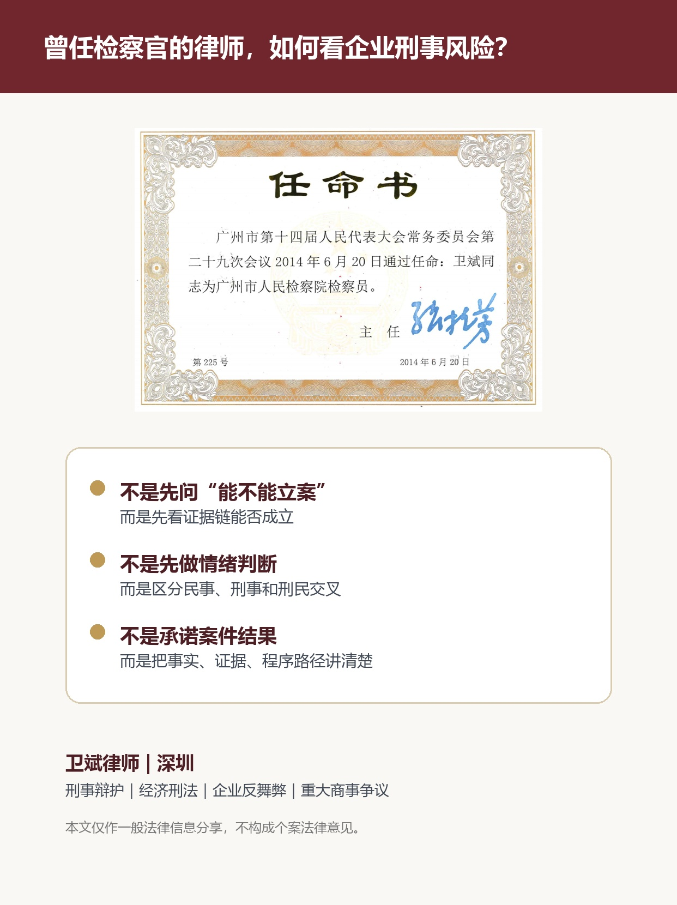

职业经历证明｜公开资料
卫斌律师曾任广州市人民检察院检察员
职业背景资料显示，广州市人民代表大会常务委员会于2014年6月20日通过任命，卫斌同志获任广州市人民检察院检察员。该项资料用于证明卫斌律师曾有检察机关任职经历。

该职业背景与当前执业的关系
卫斌律师此后先后任职于两家世界500强企业，现从事律师工作。检察机关、企业管理和律师执业的复合经历，使其在处理企业刑事风险、经济刑法、企业反舞弊、重大复杂商事争议和金融刑民交叉问题时，更重视事实认定、证据结构、程序边界和解决路径。
证明层级与使用边界
证明类型：个人持有的任命书原始材料及据此制作的公开说明卡。
证明事项：曾任广州市人民检察院检察员的职业经历。
使用边界：该经历不构成任何案件结果承诺，不暗示与司法机关存在特殊关系，也不代表具体案件能够获得特定处理结果。